Overview
Barcode Input options within the DataWedge profile specify the device hardware to use for scanning and the decoders to be applied on the acquired data before sending it for processing. Decoders supported by DataWedge are explained below, including commonly used decoders: Code39, Code128, Datamatrix, DotCode, EAN13, OCR A, OCR B, PDF417, QRCode, UPCA, and UPCE. DataWedge also provides audio and other feedback to alert the user of scanning results and barcode type. See the Scanner Parameters section for more information.
Barcode Input is used to specify:
- Device cameras
- 1D and 2D and imagers
- Laser-based barcode scanners
- Bluetooth-connected scanners
- USB synchronous serial interface (SSI) scanners
Barcode Scanner Input reads data from the integrated barcode scanner built into the device, or attached via cable or Bluetooth connection, or implemented as a snap-on module. DataWedge supports lasers, imagers and internal cameras. The raw barcode data that's acquired is processed or formatted as using the Basic and Advanced Data Formatting Processing options that are found near the Output options.
The parameters of this feature can be configured using the Set Config API.
Scanner Selection
In Barcode Input, the Scanner selection panel determines which scanning device to use for data capture. The list of available scanners is based on devices present in (or connected to) the unit being configured.

|
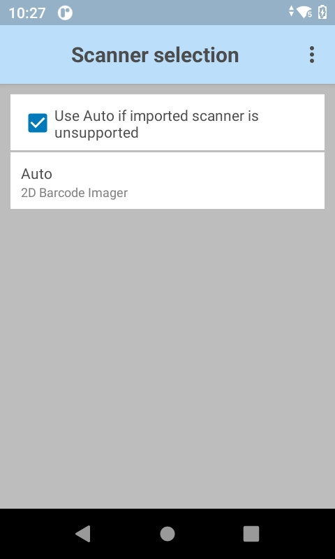 |
Scanner Selection
"Auto" is the default scanner selection, automatically determining the best scanning device from the list of available devices based on the following Auto Scanner Selection Rules:
- If a Zebra Scan Module or Scan/MSR Module is installed, the 2D imager is selected.
- If no Scan Module is installed, the camera is selected.
- When the camera is selected, scanning is performed with the rear-facing camera.
- When 2D Imager is selected, scanning is performed using the installed Scan or Scan/MSR module.
Multiple scanner support provides the capability to use more than one scanner interchangeably in the same DataWedge profile without the need for manual configuration, such as when an internal scanner and an external Bluetooth scanner is required. Additionally, each scanner can be individually configured within the same profile. To add a scanner, in the Scanner Selection screen tap the top right menu and select Add new scanner. A list of available scanners is displayed.

|
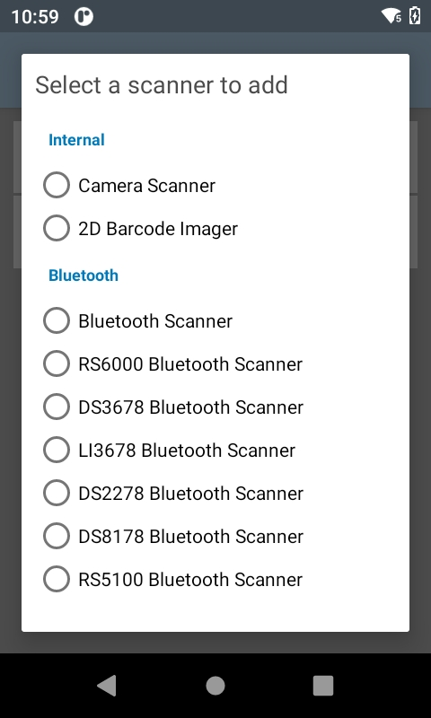 |
Add new scanner
Select the scanner to add from the list. The selected scanner is then added to the Scanner Selection list.
 Selected scanner listed
Selected scanner listed
If Scanner selection is set to Auto, all scanners are removed from the list.
Long pressing on the scanner category in the Scanner Selection screen displays a menu with options to Configure triggers or Delete. Tap on Configure Triggers to display a list of triggers to configure; the options vary depending on the device in use.
| 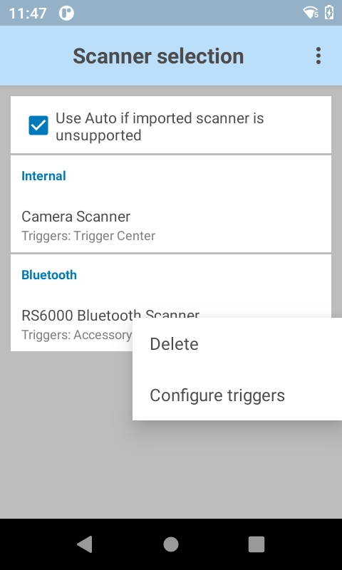 |
Add new scanner
If an external scanner and an internal scanner is selected (regardless of the order added), the internal scanner is given all the triggers by default. The user needs to select the triggers for the external scanner as required. Once a trigger or multiple triggers are assigned to the external scanner, those triggers are removed from the internal scanner. If an external scanner is removed from the scanner selection, the internal scanner is given all the triggers again. If an attempt is made to assign a trigger that is already assigned to a different scanner category, the following message is displayed:
 Configure trigger warning
Configure trigger warning
Note: Use of multiple scanners with multiple Android user accounts may result to unexpected behavior.
Bluetooth Scanners
DataWedge supports the following Zebra Bluetooth scanners:
- RS507 Cordless Ring Scanner
- RS6000 Ring Scanner
- DS3678 Ultra-Rugged Scanner
- LI3678 Ultra-Rugged Laser Scanner
- DS2278 Bluetooth Scanner
- DS8178 Bluetooth Scanner
Bluetooth scanners are supported according to the following rules:
- To initially configure the RS507 in a Profile, the scanner must be paired and connected.
- After initial configuration, a Bluetooth scanner can be enabled and disabled in the Profile, even if it is disconnected from the device. However, to configure decoders, reader parameters and other scanner settings, a Bluetooth scanner must be connected.
- DataWedge does not automatically reconnect to a Bluetooth scanner if that scanner is connected while DataWedge is using a different auto-selected scanner. To re-enable a Bluetooth scanner, connect the scanner and select it in the Profile or re-choose the "Auto" selection option.
- Auto-selection and Battery Swap - If Scanner selection is set to Auto and an RS507 was enabled prior to a battery swap, DataWedge continues working with that RS507 scanner upon reconnection after a battery is swapped. If the RS507 does not reconnect after the swap, DataWedge reverts to the current default scanner.
- Keep Enabled on Suspend - This mode is supported on Bluetooth and pluggable scanners, and might result in faster battery drain than would otherwise be expected while in suspend mode. Note: The Zebra computing device wakes from suspend mode when pressing the scan trigger of any supported scanner.
USB SSI Scanners
DataWedge supports the following Zebra USB SSI scanners:
- DS3608 USB SSI Scanner
- LI3608 Ultra-Rugged USB SSI Laser Scanner
- RS4000 USB SSI Ring Scanner
- RS5000 USB SSI Ring Scanner
Support notes:
- The DS3608 and LI3608 scanners are supported only on VC80 devices running Android
- Scanner must be configured using Symbol Native API (SNAPI) with Imager Interface
- SNAPI drivers are included with supported devices
- The scanner connects via USB port and cable
Important: Support for decode parameters can vary depending on the scanning device selected. For device-specific support notes, please refer to the Integrator Guide that accompanied the unit.
Hardware Trigger
This feature configures DataWedge to enable/disable use of the device hardware trigger for barcode input. The hardware trigger is enabled by default. If disabled, the scan beam does not appear when pressing the hardware trigger. However, the scan beam can still be activated by using the Soft Scan Trigger DataWedge API intent. This feature allows application programmers to enforce the use of app-specific features when scanning barcodes and documents within their app.

Note: When the hardware trigger is disabled, it cannot be used to trigger the scan beam. If scanning is initiated by the soft scan trigger API intent, a hardware trigger press cancels the beam.
Auto Switch to Default on Event
This feature configures DataWedge to select an external scanner as the default scanning device immediately upon connection and revert to a built-in scanner when the external scanner is disconnected. External scanners include those connecting by Bluetooth, serial cable or snap-on module. If enabled, SWITCH_SCANNER should not be used upon scanner connection/disconnection as it can cause unexpected behavior. Disabled by default. Available only when “Auto" is selected in the Scanner selection panel.
This feature is intended to help reduce scanning workflow interruptions when a Bluetooth scanner is introduced and/or it becomes disconnected by losing power or moving out of range.
For Bluetooth scanners, if the device was not previously paired, a pairing barcode is displayed prior to automatic connection.
 "Auto switch to default on event" is available only when "Auto" is selected.
"Auto switch to default on event" is available only when "Auto" is selected.
Available Options:
- Disabled - No scanner switching occurs when an external scanner is connected or disconnected (default).
- On connect - Selects the external scanner as the default scanning device immediately upon connection.
- On disconnect - Reverts to a built-in scanner based on its position in an internally managed scanner list (which varies by host device). This is usually the scanner most recently used prior to the external connection (see notes below).
- On connect/disconnect - Selects an external scanner as the default scanning device immediately upon connection. Upon disconnection, reverts to the scanner set as the default prior to the external connection.
Notes:
- The system selects the default scanner based on the connection state and the scanner's position in an internally managed scanner list. If the newly connected scanner is lower in the scanner list than the one currently selected as the default scanner, the newly connected scanner becomes the default scanner.
- On devices with only one built-in scanner or imager, "On disconnect" reverts to that built-in scanner or imager.
Configure Scanner Settings
Configure scanner settings option is accessible through the DataWedge profile settings. It configures the scanner parameters specifying how the barcode is scanned, including the selected scanner (e.g. camera, 2D Imager, Bluetooth scanner, etc.), decoder, decoder parameters, reader params and scan params. Refer to the corresponding sections below on each option for further information.
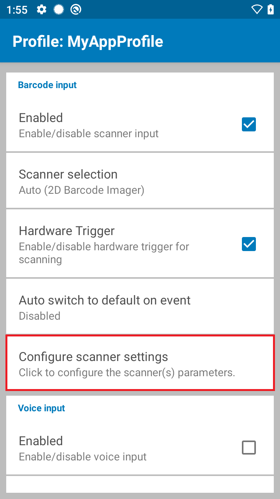 Profile settings
Tap Configure scanner settings. A list of scanner configuration settings appears.
 Scanner configuration
Scanner configuration
Note: The Configure scanner settings option is still accessible even when the selected scanner in Scanner Selection is disconnected. In previous DataWedge versions prior to 6.8, all the scanner parameters (decoders, decoder params, etc.) are grayed-out and inaccessible.
Scanning Modes
Scanning Modes is used to select the mode to scan barcodes:
- Single - normal mode to scan an individual barcode
- UDI - scan Unique Device Identification (UDI) barcodes such as GS1, HIBCC and ICCBBA
- Disabled – when a scanning mode, such as MultiBarcode or Document Capture, is selected in the NG SimulScan Configuration screen, scanning mode in this section is automatically disabled, preventing any other selection.
Scanning Modes exists within both Scanner Configuration and NG SimulScan Configuration sections. The availability of Scanning Modes options is interdependent on the option selected within each section:
- If Single or UDI is selected as the Scanning Mode within Scanner Configuration, then Scanning Modes is disabled within NG SimulScan Configuration.
- If Document Capture or MultiBarcode is selected for Scanning Modes within NG SimulScan Configuration, then Scanning Modes is disabled within Scanner Configuration.
| 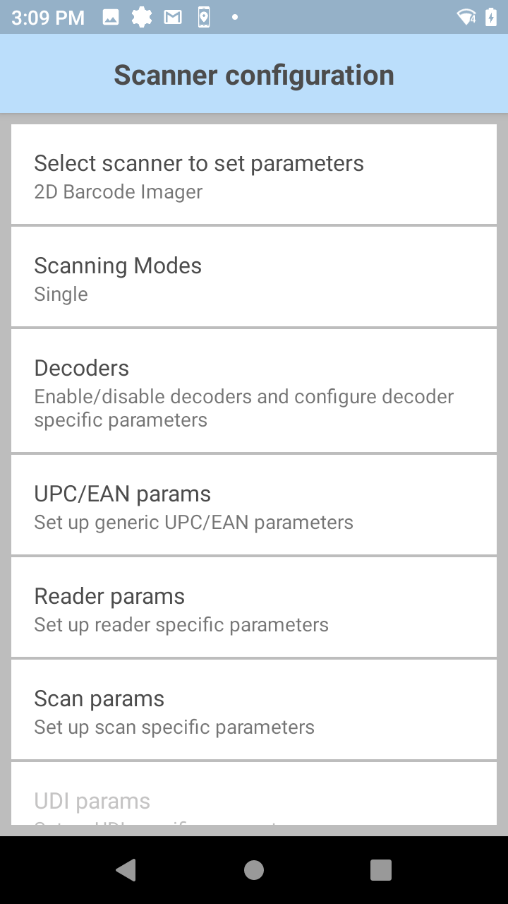 | 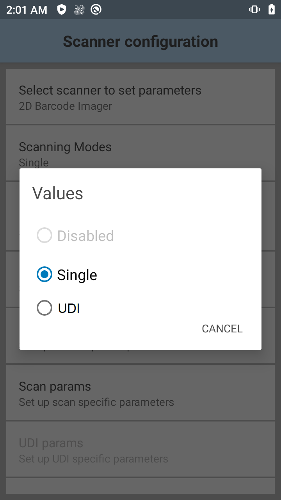 |
Scanner Configuration - Scanning Modes
NextGen SimulScan Configuration
NextGen (NG) SimulScan Configuration is configuration transferred from legacy SimulScan Input of DataWedge previously deprecated. NG SimulScan is a data capture solution for retrieving data from documents, forms, and labels by scanning barcodes or capturing partial or entire documents as images. Not all legacy SimulScan features are available - migration of these features into NextGen SimulScan is a continuous effort. Currently, the following features are part of NextGen SimulScan:
- MultiBarcode - acquires multiple, unique barcodes from a form in a single scan session and delivers the data either immediately or after the specified number of barcodes per scan is reached. Supported since DataWedge 8.0. Unlike legacy SimulScan, a template is not required for this MultiBarcode feature, as opposed to the MultiBarcode subfeature that is part of Document Capture that does require a template.
- Document Capture - retrieves data from documents, forms, and labels by scanning barcodes or capturing partial or entire documents as images. Supported since DataWedge 8.0 and only available on select devices and scanners, see Feature Matrix. Document Capture, which includes MultiBarcode as a subfeature, requires a NextGen SimulScan template, also known as Document Capture template.
For Zebra Professional Series devices, such as TC21 and TC26, NextGen SimulScan requires a Mobility DNA Enterprise license. The following message is displayed when attempting to access this feature on a device without a valid license:
 License required on Zebra Professional devices
License required on Zebra Professional devices
See DataWedge Licensing for more information.
To access NextGen SimulScan Configurations:
In the DataWedge profile, tap Configure NG SimulScan settings.
 DataWedge profile displaying NG SimulScan
DataWedge profile displaying NG SimulScanThe NG SimulScan configuration screen appears with options similar to Configure scanner settings.
 NextGen (NG) SimulScan configuration
NextGen (NG) SimulScan configuration
Aside from Scanning Modes, Document Selection and MultiBarcode Params, all other options are common to those displayed under Configure scanner settings. Refer to the corresponding sections below on each NG SimulScan Configuration option for further information.
Scanning Modes
Scanning Modes selects the mode to scan barcodes:
- MultiBarcode - multiple barcodes read in a single scan. A template is not required.
- Document Capture - capture fields within a document or capture the entire document as an image based on a specified template.
- Disabled – when a scanning mode, such as Single or UDI, is selected in the Scanner Configuration section, scanning mode is automatically disabled in NG SimulScan Configuration, preventing any other selection.
Scanning Modes exists within both Scanner Configuration and NG SimulScan Configuration sections. The availability of Scanning Modes options is interdependent on the option selected within each section:
- If Single or UDI is selected as the Scanning Mode within Scanner Configuration, then Scanning Modes is disabled within NG SimulScan Configuration.
- If Document Capture or MultiBarcode is selected for Scanning Modes within NG SimulScan Configuration, then Scanning Modes is disabled within Scanner Configuration.
NextGen (NG) SimulScan - Scanning Modes
Document Selection / Document Capture
Document Selection specifies the template to use for Document Capture to retrieve data from documents, forms, and labels by scanning barcodes or capturing partial or entire documents as images. A Document Capture/NextGen SimulScan Template is required to process the acquired data so it can be consumed by an application. Document Capture must be selected as the Scanning Mode. There are 2 types of Document Capture templates:
- Image Capture - acquires mixed types of data at once (barcodes, text, images, etc.) when the document to be scanned has a fixed layout - the location and type of data in each field remain consistent whenever the form is used, and only the data changes with each new instance of the form.
- MultiBarcode - acquires data from forms that contain barcodes. This applies to cases where multiple barcodes are required to be captured simultaneously, or specific barcode(s) need to be read from a multitude of barcodes.
See Template Builder for instructions on how to create a Document Capture/NextGen SimulScan Template. After creating the Template, copy it to the device.
To select the Document Capture/NextGen SimulScan Template, in the NG SimulScan configuration screen tap on Document Selection and select a template for the document to be captured (see screen capture below). This selection is populated with the imported template after template deployment. With Document Capture, it is required to Use content providers to retrieve scanned data. To add a template to the Document Selection using DataWedge Manager CSP for ease of deployment, refer to Import NextGen SimulScan Templates and NG SimulScan template.
 Document Capture template selection
Document Capture template selection
Video on how to deploy a Document Capture/NextGen SimulScan template to a device using StageNow:
The following subsections highlight a few different types of Document Capture Template options:
A) Anchor Barcode
Document Capture with Anchor Barcode captures fields within a document as images, such as an address or signature, based on the barcode in the NextGen SimulScan Template that determines the position of the fields being captured. Applies to Image Capture template type. Once properly configured, scan the anchor barcode to capture the specific area as image. Different fields in the document can be captured in separate images. This is useful in situations such as delivery operations, to capture the address and signature in delivery forms as separate images for proof of delivery.
Video demonstration of document capture with anchor barcode:
B) Whole Page
Whole Page Document Capture acquires the entire document, or form, as an image based on the surrounding borders of the content defined in the NextGen SimulScan Template. Applies to Image Capture template type. The entire document can be captured with or without scanning a barcode. The document must have black borders surrounding all four sides or be bordered by a contrasting background, otherwise the document cannot be captured.
Video demonstration of whole page document capture:
C) Signature Presence Detection
Detect the presence of a handwritten signature when scanning a document with Document Capture. This feature is useful particularly for delivery or courier services to automatically check if a signature is missing, rather than manually performing the check. The NextGen SimulScan Template is required to designate the region on the form used to identify the location of the signature to detect its presence. Applies to Image Capture template type. Signature presence detection is controlled through the Content Provider. See Content Provider programmer's guide for more information.
Video demonstration of signature presence detection:
D) Read Specific Barcode
Read Specific Barcode decodes a particular barcode among a multitude of barcodes based on specific criteria defined in a NextGen SimulScan Template. Applies to MultiBarcode (as part of Document Capture) template type. The criteria to capture the barcode is defined in the NextGen SimulScan Template. See Template Builder for more information and instructions on how to create the template. The criteria to read specific barcodes is based on the following options selected during template creation. Any combination of these options can be used. If more than one barcode is present that matches the given criteria, then the option Automatic Group Identification, described in the following section, can be used instead.
- Barcode Type – Specifies the barcode type or decoder as defined in the template.
- Character Checking (Begins with) – Specifies the specific character the barcode must begin with in order to decode, as defined in the template. Some common specifications:
○ N - (e.g.: NXXXXXX) for advice note number
○ P – (e.g.: PXXXXXX) for part number
○ Q – (e.g.: QXXXXXX) for quantity
○ V – (e.g.: VXXXXXX) for vendor ID - Character Checking (Contains characters at a given location in the string) – Specifies the character(s) at a given position in the decoded string which the barcode must contain, as defined in the template.
- Barcode Data Length – Specifies the length of the barcode string to decode, as defined in the template.
- Multiple Character Checking (Begins with) – Specifies the acceptable characters for the barcode string to begin with, as specified in the template. For example, if “A” and “B” is specified, then only barcodes that begin with “A” or “B” are decoded.
- Variable Field Presence (Mandatory + Optional Barcode) – applies to forms that contain a combination of mandatory and optional barcodes to decode, as specified in the template. If the mandatory barcode is not present, then the decode does not take place. If the mandatory barcode is present with an optional barcode, then both are decoded. If the mandatory barcode is present without an optional barcode, then the mandatory barcode is decoded.
E) Auto Group Identification
Auto Group Identification decodes barcodes from a document that share a common pattern, designating them into a unique group based on the criteria defined in the NextGen SimulScan Template. Applies to MultiBarcode (as part of Document Capture) template type. All of the following criteria must be met for this group of barcodes in order to decode:
- Same barcode symbology
- Same first 1-2 Characters of the barcode data
- Same barcode data length
When using this option, the quantity of barcodes must be specified by using one of the following methods:
- Barcode – Based on the template, a separate barcode is present on the form or label specifying the quantity of barcodes to scan for each decode session. The decoded data from the Quantity barcode must meet at least one of the following criteria:
- Starts with "Q" or "q"
- Length is 3 digits or less
- User/System Defined - Set the quantity of barcodes (value range: 1 to 100; default value: 5) to scan based on:
- DataWedge UI - use option Group of common barcodes dynamic quantity under Template params from NG SimulScan configuration, as shown below.
- DataWedge intent API - use SetConfig to set
common_barcode_dynamic_quantityto the desired quantity.

|
Set barcode quantity for Auto Group Identification
Video demonstration of Specify Barcode Criteria and Automatic Group Identification features:
MultiBarcode Params
MultiBarcode (separate from MultiBarcode under Document Capture) acquires multiple, unique barcodes from a form in a single scan session and delivers the data either immediately or after the specified number of barcodes per scan is reached. A template is not required. In DataWedge 8.1 and earlier, this section is displayed as Basic MultiBarcode params.

|
MultiBarcode params
MultiBarcode params options:
- Instant Reporting - Enable/Disable instantaneous reporting of unique barcodes within a scanning session (duplicates are ignored). If enabled, it ignores the value of Number of barcodes per scan and immediately reports the scanned data. If disabled (default), the decoded data is returned as a single entity after reaching the specified Number of barcodes per scan.
- Number of barcodes per scan- Specify the number of unique barcodes to be decoded with each scan session before sending the scanned data. This setting does not take effect if Instant Reporting is enabled. For example, if 5 is specified, the scanner does not send the data until 5 barcodes are scanned. Default value: 5; value range: 2 to 100.
- Report Decoded Barcodes - Enable/Disable reporting of decoded barcode data in a single scan session irrespective of the specified Number of barcodes per scan. Consider the following behavior when Report Decoded Barcodes is enabled:
- If Continuous Read is also enabled, it does not work.
- If Instant Reporting is also enabled, Instant Reporting takes higher priority.
MultiBarcode Notes:
- Acquired data from all barcodes is delivered as a single string when output as keystrokes. To add separators and adjust output order, see the Keystroke Output guide.
- MultiBarcode supports a maximum data size of 64 KB.
- Picklist behavior - If the Picklist parameter is set to “Disabled,” the device will attempt to scan the number of barcodes specified in the MultiBarcode params screen. If the Picklist parameter is set to a value other than “Disabled," the user is expected to move the cross-hair to each barcode to be scanned. Data is returned only after the specified number of barcodes is read.
- Duplicate barcodes - If a label to be scanned contains multiple barcodes, some of which are duplicates (with the same label type and data), only one barcode from the duplicates is decoded; the remainder are ignored. If the label has two duplicate barcodes plus another two different barcodes, a maximum of three barcodes will be decoded from that form; one will be ignored as a duplicate.
- Multiple barcode types - Barcodes can be of multiple label types and still be acquired together. For example, if the specified quantity for a Multi-barcode scan is four, two barcodes can be label type Code 128 and the other two can be type Code 39.
- Barcodes in view -If the specified number of barcodes is not initially in view of the scanner, the scanner will not decode any data. If the scanner's field of view contains a number of barcodes greater than the specified quantity, the scanner will randomly decode barcode(s) until the specified number is reached. For example, if the count is set to two and eight barcodes are in the field of view, the scanner will decode the first two barcodes it sees, returning the data in random order. Data is returned only after the specified number of barcodes is read.
- If both Continuous Read and Instant Reporting parameters are enabled, Instant Reporting takes precedence over Continuous Read, which is ignored.
Global Scanner Configuration
Global scanner configuration (All Scanners) allows users to specify a generic scanner configuration applicable for all supported scanners. Rather than specifying multiple individual configurations for each separate scanner within a given DataWedge profile, the global configuration setting is provided to configure multiple scanners in a single profile.
Global scanner configuration (All Scanners) displays all scanner parameters and values for each and every scanner even if not supported by a specific scanner. Since this list is all-inclusive, there is a possibility a particular parameter or value may not be supported on an individual scanner. In this case, an error is logged in logcat during scanning.
When global scanner configuration (All Scanners) is enabled, access is still available to settings specific to individual scanners, such as the option “Keep enabled on suspend” (which specifically applies to Bluetooth and other peripheral scanners), even if the default scanner is selected as an internal scanner for “Scanner Selection” (See Figure 1). When applying configurations, if any of the global settings are not applicable to the specific scanner, those settings cannot apply and will be disregarded.
When a global setting is configured and then an individual scanner is configured, both configuration options are saved. The configurations will be applied in the following order:
- The global configuration is applied.
- The specific scanner configuration is applied.
If reports are generated when the global scanner configuration is set, the values supported by the connected device will be returned.
Configuration
Open a profile in DataWedge. The "Barcode input" section contains the option "Configure scanner settings".
Note: The “Configure scanner settings” option is still accessible even when the selected scanner in “Scanner Selection” is disconnected. In previous DataWedge versions prior to 6.8, all the scanner parameters (decoders, decoder params, etc.) are grayed-out and inaccessible.
Profile settings
Tap "Configure scanner settings". A list of scanner configuration settings appears.
 Scanner configuration
Scanner configuration
Tap "Select scanner to set parameters". All Scanners option is available to enable global scanner configuration, allowing the scanner settings to apply to all scanners.
 Global scanner configuration
Global scanner configuration
Select All Scanners. A confirmation message appears indicating that any setting changes moving forward will be applicable to all scanners as a common global configuration. Any existing individual scanner setting will be replaced by this global setting. The scanner does not need to be connected to the device in order to configure the settings in the global scanner configuration.
Using Intents
Set the global scanner configuration by setting the value of parameter configure_all_scanners to "true" via SET_CONFIG intent API.
Decoder Selection
Many input methods include parameters that are configurable according to the expected scan targets and/or preferences of an organization. Enabling a narrow selection of decoders can help increase security, reduce decode errors and improve scan performance. For example, a company that routinely receives packages encoded with Code 128 symbology might consider limiting the Code 128 decoders it implements to those of the non-EAN variety.
Parameters for individual Decoders are modified within a Profile. Each DataWedge Profile can be assigned a unique group of Decoders and Decoder parameters (where applicable) to use with its associated application(s). This guide covers the selection of Decoders and provides details for those with configurable parameters.
Default Decoders
DataWedge decodes all major barcode symbologies. Popular formats are enabled by default in all DataWedge Profiles (indicated by an *). To improve scanning performance, Zebra recommends disabling all Decoders not required by the app(s) associated with a given Profile.
Note:
- Decoders lacking configurable parameters do not appear in the Decoder Parameters section. Others are linked to their corresponding parameter descriptions.
- Only "Australian Postal" or "Canadian Postal" should be selected as a decoder, not both. If both are simultaneously selected as decoders, only "Canadian Postal" barcodes are decoded.
Australian Postal |
Aztec* |
Canadian Postal |
Chinese 2of5 |
||
Code 32* |
||
Datamatrix* |
||
EAN-8* |
||
EAN-13* |
Finnish Postal 4S |
GS1 DataBar |
GS1 DataBar Limited |
GS1 DataBar Expanded |
|
Japanese Postal |
||
MacroPDF* |
MAILMARK |
|
Maxicode* |
MICR E13B |
|
MicroQR |
MacroMicroPDF* |
|
PDF417* |
||
QR Code* |
TLC 39* |
|
US Currency |
||
US Postal |
UPC-A* |
|
US4state FICS |
US4state |
* Enabled by default
Note: Hyperlinked decoders indicate (and link to) configurable parameters.
Enable/Disable Decoders
To enable or disable Decoders:
1. From the Profile being edited, tap Configure scanner settings then tap Decoders as highlighted below.
A list of Decoders appears similar to the image in Step 2.
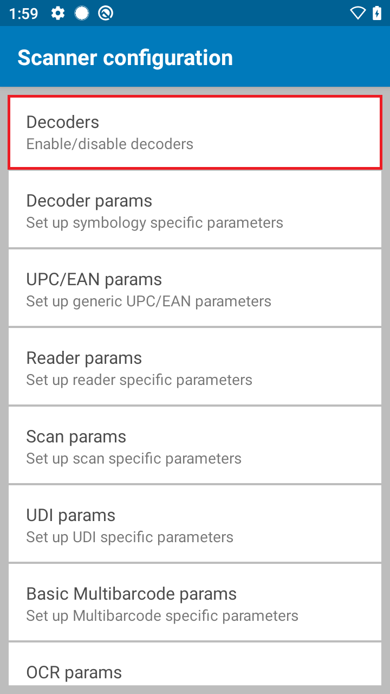
2. Select/deselect the desired Decoders by checking/unchecking the corresponding checkbox.
Note: Reducing nonessential Decoders can improve scanning performance.
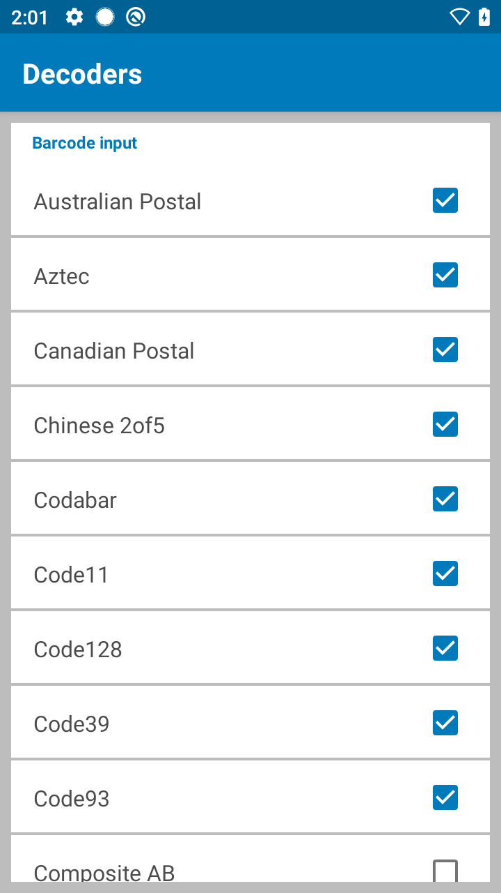
Edit Decoder Parameters
To edit Decoder parameters:
1. From the Profile being edited, tap Decoders.
A list of Decoders appears similar to the image in Step 2, below.
2. From the Decoder list, tap a decoder to edit its parameters.
If a decoder has no parameters, a checkbox is displayed to enable/disable the decoder.
Decoder Parameters
Editable parameters of individual Decoders are explained below. Note: Decoders lacking configurable parameters do not appear in the Decoder Parameters section below. For further instructions about creating and editing DataWedge Profiles, see "Manage Profiles" guide.
Reduced Quiet Zone
The quiet zone is the blank space on either side of a bar code that indicates where the symbology begins and ends, and is intended to prevent the reader from scanning irrelevant information. When marginless decoders are used with Reduced Quiet Zone Level reader parameters, the decoders behave according to the following table:
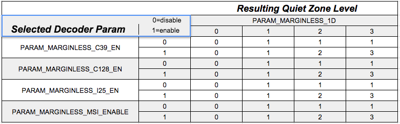
Descriptions of the 1D Quiet Zone Levels shown above are in the Reader Params section along with important warnings.
UPCE0
Report Check Digit - The check digit is the last character of the symbol used to verify the integrity of the data. Enables or disables this option. A check in the checkbox indicates that the option is enabled.
Preamble - Preamble characters are part of the UPC symbol consisting of Country Code and System Character. There are three options for transmitting a UPCE0 preamble:
Preamble Sys Char - Transmit System Character only.
Preamble Country and Sys Char - Transmit System Character and Country Code ("0" for USA).
Preamble None - Transmit no preamble.
Select the appropriate option to match the host system.
Convert UPCE0 To UPCA - Enable to convert UPCE0 (zero suppressed) decoded data to UPC-A format before transmission. After conversion, the data follows UPC-A format and is affected by UPC-A programming selections. Disable to transmit UPCE0 decoded data as UPCE0 data, without conversion (default - disabled).
UPCE1
Report Check Digit - The check digit is the last character of the symbol used to verify the integrity of the data. Enables or disables this option. A check in the checkbox indicates that the option is enabled.
Preamble - Preamble characters are part of the UPC symbol consisting of Country Code and System Character. There are three options for transmitting a UPCE1 preamble:
Preamble Sys Char - Transmit System Character only.
Preamble Country and Sys Char - Transmit System Character and Country Code ("0" for USA).
Preamble None - Transmit no preamble.
Select the appropriate option to match the host system.
Convert UPCE1 To UPCA - Enable this to convert UPCE1 decoded data to UPC-A format before transmission. After conversion, the data follows UPC-A format and is affected by UPC-A programming selections. Disable this to transmit UPCE1 decoded data as UPCE1 data, without conversion.
UPCA
Report Check Digit - The check digit is the last character of the symbol used to verify the integrity of the data. Enables or disables this option. A check in the checkbox indicates that the option is enabled.
Preamble - Preamble characters are part of the UPC symbol consisting of Country Code and System Character. There are three options for transmitting a UPCA preamble:
Preamble Sys Char - Transmit System Character only.
Preamble Country and Sys Char - Transmit System Character and Country Code ("0" for USA).
Preamble None - Transmit no preamble.
Select the appropriate option to match the host system.
MSI
Length1* - To decode an MSI symbol with a specific length range, set this value to the lower limit. For example, to decode MSI symbols containing between 4 and 12 characters, this value would be set to 4.
Length2* - To decode an MSI symbol with a specific length range, set this value to the upper limit. For example, to decode MSI symbols containing between 4 and 12 characters, this value would be set to 12.
* See Decode Lengths section, below
Redundancy - Sets the reader to read the barcode twice before accepting data.
Check Digit - With MSI symbols, one check digit is required, and is always verified by the reader. The second check digit is optional.
- One Check Digit - Verify one check digit.
- Two Check Digits - Verify two check digits.
Check Digit Scheme - Two algorithms are possible for the verification of the second MSI check digit. Select the algorithm used to encode the check digit:
- Mod-11-10 - First check digit is MOD 11; the second check digit is MOD 10.
- Mod-10-10 - Both check digits are MOD 10.
Report Check Digit - Transmit MSI data with or without the check digit. A check in this checkbox will send MSI data with a check digit.
Codabar
Length1* - To decode a Codabar symbol with a specific length range, set this value to the lower limit. For example, to decode Codabar symbols containing between 8 and 24 characters, this value would be set to 8.
Length2* - To decode a Codabar symbol with a specific length range, set this value to the upper limit. For example, to decode Codabar symbols containing between 8 and 24 characters, this value would be set to 24.
* See Decode Lengths section, below
Redundancy - Sets the reader to read the barcode twice before accepting data.
Clsi Editing - Enable this parameter to strip the start and stop characters and insert a space after the first, fifth, and tenth characters of a 14-character Codabar symbol. Enable this feature if the host system requires this data format.
Notis Editing - Enable this parameter to strip the start and stop characters from a decoded Codabar symbol. Enable this feature if the host system requires this data format.
Code39
Length1* - To decode a Code 39 symbol with a specific length range, set this value to the lower limit. For example, to decode Code 39 symbols containing between 8 and 24 characters, this value would be set to 8.
Length2* - To decode a Code 39 symbol with a specific length range set this value to the upper limit. For example, to decode Code 39 symbols containing between 8 and 24 characters, this value would be set to 24.
* See Decode Lengths section, below
Verify Check Digit - Enable this feature to check the integrity of all Code 39 symbols to verify that the data complies with a specified check digit algorithm. The digital scanner decodes only those Code 39 symbols that include a modulo 43 check digit. Enable this feature only if the Code 39 symbols contain a modulo 43 check digit.
Report Check Digit - Transmit Code 39 data with or without the check digit. A check in the checkbox will send Code 39 data with a check digit.
Full ASCII - Code 39 Full ASCII is a variant of Code 39 that pairs characters to encode the full ASCII character set. Check this checkbox to enable Code 39 Full ASCII.
Redundancy - Sets the reader to read the barcode twice before accepting data.
Convert Code39 To Code32 - Code 32 is a variant of Code 39 used by the Italian pharmaceutical industry.
Report Code32 Prefix - Enables the addition of the prefix character "A" to all Code 32 barcodes.
Security Level - Options: Security level 0, Security Level 1, Security Level 2 and Security Level 3.
Discrete 2of5
Length1* - To decode a Discrete 2of5 symbol with a specific length range, set this value to the lower limit. For example, to decode Discrete 2of5 symbols containing between 4 and 12 characters, this value would be set to 4.
Length2* - To decode a Discrete 2of5 symbol with a specific length range, set this value to the upper limit. For example, to decode Discrete 2of5 symbols containing between 4 and 12 characters, this value would be set to 12.
* See Decode Lengths section, below
Redundancy - Sets the reader to read the barcode twice before accepting data.
DotCode
Inverse - To specify the reflectance for decoding DotCode barcodes, set the option:
- Disabled (0) - To decode DotCode barcodes with normal reflectance only.
- Enabled (1) - To decode DotCode barcodes with inverse reflectance only.
- Auto (2) - To decode both normal and inverse reflectance DotCode barcodes (default).
Mirror - To specify whether mirrored DotCode barcodes are decoded, set an option:
- Disabled (0) - To decode non-mirrored DotCode barcodes only.
- Enabled (1) - To decode mirrored DotCode barcodes only.
- Auto (2) - To decode both mirrored and non-mirrored DotCode barcodes (default).
Dutch Postal
Dutch Postal 3S - To enable/disable decoding of KIX 3S barcodes of type Dutch Postal.
Interleaved 2 of 5
Length1* - To decode an Interleaved 2 of 5 symbol with a specific length range, set this value to the lower limit. For example, to decode Interleaved 2 of 5 symbols containing between 4 and 12 characters, this value would be set to 4.
Length2* - To decode an Interleaved 2 of 5 symbol with a specific length range, set this value to the upper limit. For example, to decode Interleaved 2 of 5 symbols containing between 4 and 12 characters, this value would be set to 12.
* See Decode Lengths section, below
Redundancy - Sets the reader to read the barcode twice before accepting data.
Febraban - Enable or disable insertion of special check characters into the transmitted data stream of Interleaved 2 of 5 barcodes that are of length 14 characters and meet specific Febraban criteria.
Check Digit
No Check Digit - A check digit is not used.
USS Check Digit - Select to check the integrity of all Interleaved 2 of 5 symbols to verify the data complies with the Uniform Symbology Specification (USS) check digit algorithm.
OPCC Check Digit - Select to check the integrity of all Interleaved 2 of 5 symbols to verify the data complies with the Optical Product Code Council (OPCC) check digit algorithm.
Report Check Digit - Transmit Interleaved 2 of 5 data with or without the check digit. A check in the checkbox sends Interleaved 2 of 5 data with check digit.
Convert ITF-14 To EAN13 - Convert 14-character Interleaved 2 of 5 barcodes to EAN-13, and transmit as EAN-13. The Interleaved 2 of 5 barcode must be enabled and must have a leading zero and a valid EAN-13 check digit.
Code11
Length1* - To decode a Code 11 symbol with a specific length range, set this value to the lower limit. For example, to decode Code 11 symbols containing between 4 and 12 characters, this value would be set to 4.
Length2* - To decode a Code 11 symbol with a specific length range, set this value to the upper limit. For example, to decode Code 11 symbols containing between 4 and 12 characters, this value would be set to 12.
* See Decode Lengths section, below
Redundancy - Sets the reader to read the barcode twice before accepting data.
Verify Check Digit - Check the integrity of all Code 11 symbols to verify that the data complies with the specified check digit algorithm. This selects the check digit mechanism for the decoded Code 11 barcode.
No Check Digit - Do not verify check digit.
One Check Digit - Barcode contains one check digit.
Two Check Digits - Barcode contains two check digits.
Report Check Digit - Transmit Code 11 data with or without the check digit. A check in the checkbox sends Code 11 data with a check digit.
Code93
Length1* - To decode a Code 93 symbol with a specific length range, set this value to the lower limit. For example, to decode Code 93 symbols containing between 4 and 12 characters, this value would be set to 4.
Length2* - To decode a Code 93 symbol with a specific length range, set this value to the upper limit. For example, to decode Code 93 symbols containing between 4 and 12 characters, this value would be set to 12.
* See Decode Lengths section, below
Redundancy - Sets the reader to read the barcode twice before accepting data.
Code128
Length1* - To decode a Code 128 symbol with a specific length range, set this value to the lower limit. For example, to decode Code 128 symbols containing between 4 and 12 characters, this value would be set to 4.
Length2* - To decode a Code 128 symbol with a specific length range, set this value to the upper limit. For example, to decode Code 128 symbols containing between 4 and 12 characters, this value would be set to 12.
* See Decode Lengths section, below
Redundancy - Sets the reader to read the barcode twice before accepting data.
Enable GS1-128 - Set the GS1-128 subtype. A check in the checkbox indicates that the option is enabled for this label type.
Enable ISBT128 - Set the ISBT128 subtype. A check in the checkbox indicates that the option is enabled.
Enable Plain Code128 - Enables other (non-EAN or ISBT) Code 128 subtypes.
ISBT128 Concat Mode - Select an option for concatenating pairs of ISBT code types:
Concat Mode Never - Do not concatenate pairs of ISBT codes encountered.
Concat Mode Always - There must be two ISBT codes in order to decode and perform concatenation. Does not decode single ISBT symbols.
Concat Mode Auto - Decodes and concatenates pairs of ISBT codes immediately. If only a single ISBT symbol is present, the device must decode the symbol the number of times set via Redundancy - Code128 before transmitting its data to confirm that there is no additional ISBT symbol.
Check ISBT Table - The ISBT specification includes a table that lists several types of ISBT barcodes that are commonly used in pairs. If ISBT128 Concat Mode is set, enable "Check ISBT Table" to concatenate only those pairs found in this table. Other types of ISBT codes are not concatenated.
Security Level - The scanner offers four levels of decode security for Code 128 barcodes. As the quality of barcodes decreases, implementing an increased level of security will compensate and help improve decoding success. There is an inverse relationship between scanner aggressiveness and security. Zebra recommends choosing carefully the level of security necessary for any given application:
Security Level 0 - This setting allows the scanner to operate in its most aggressive state, while providing sufficient security in decoding most "in-spec" barcodes.
Security Level 1 - This setting eliminates most decode failures.
Security Level 2 - Select this option if Security level 1 fails to eliminate decode failures.
Security Level 3 - If Security Level 2 is selected and decode failures still occur, select this security level. Be advised, selecting this option is an extreme measure against mis-decoding severely out-of-spec barcodes. Selecting this security level significantly impairs the decoding ability of the scanner. If this level of security is required, try to improve the quality of the barcodes.
Grid Matrix
Inverse - To specify the reflectance for decoding Grid Matrix barcodes, set the option:
- Disabled (0) - To decode Grid Matrix barcodes with normal reflectance only (default).
- Enabled (1) - To decode Grid Matrix barcodes with inverse reflectance only.
- Auto (2) - To decode both normal and inverse reflectance Grid Matrix barcodes.
Mirror - To specify whether mirrored Grid Matrix barcodes are decoded, set an option:
- Disabled (0) - To decode non-mirrored Grid Matrix barcodes only (default).
- Enabled (1) - To decode mirrored Grid Matrix barcodes only.
- Auto (2) - To decode both mirrored and non-mirrored Grid Matrix barcodes.
GS1 Datamatrix
The following table depicts the decode behavior between Datamatrix and GS1 Datamatrix:
| Can Decode | Type | Can Decode | Type | ||
| Enabled | Enabled | Yes | LABEL-TYPE-DATAMATRIX | Yes | LABEL-TYPE-GS1-DATAMATRIX |
| Enabled | Disabled | Yes | LABEL-TYPE-DATAMATRIX | Yes | LABEL-TYPE-DATAMATRIX |
| Disabled | Enabled | No | [none] | Yes | LABEL-TYPE-GS1-DATAMATRIX |
| Disabled | Disabled | No | [none] | No | [none] |
Notes:
- The blue shaded row indicates a successful decode for label types reported as Datamatrix although GS1 Datamatrix is disabled.
GS1 QR Code
The following table depicts the decode behavior between QR Code and GS1 QR Code:
| Can Decode | Type | Can Decode | Type | ||
| Enabled | Enabled | Yes | LABEL-TYPE-QRCODE | Yes | LABEL-TYPE-GS1-QRCODE |
| Enabled | Disabled | Yes | LABEL-TYPE-QRCODE | Yes | LABEL-TYPE-QRCODE |
| Disabled | Enabled | No | [none] | Yes | LABEL-TYPE-GS1-QRCODE |
| Disabled | Disabled | No | [none] | No | [none] |
Notes:
- The blue shaded row indicates a successful decode for label types reported as QR Code although GS1 QR Code is disabled.
Trioptic39
Redundancy - Sets the reader to read the barcode twice before accepting data.
HAN XIN
HAN XIN Inverse - Checks the inverse of the HanXin decoder.
Matrix 2of5
Length1* - Used to set decode length.
Length2* - Used to set decode length.
Redundancy - Sets the reader to read the bar code twice before accepting data.
Report Check Digit - Transmit Matrix 2of5 data with or without the check digit.
Verify Check Digit - Enable this feature to check the integrity of all Matrix 2of5 symbols to verify that the data complies with a specified check digit algorithm.
* See Decode Lengths section, below
MicroPDF
Code 128 Emulation - Enable this option to transmit data from certain MicroPDF417 symbols as Code 128. This option requires that the AIM Code ID Character be enabled.
Enable Code 128 Emulation to transmit these MicroPDF417 symbols with one of the following prefixes:
]C1 if the first codeword is 903, 904 or 905
]C2 if the first codeword is 908 or 909
]C0 if the first codeword is 910 or 911
Disable Code 128 Emulation to transmit these MicroPDF417 symbols with one of the following prefixes:
]L3 if the first codeword is 903, 904 or 905
]L4 if the first codeword is 908 or 909
]L5 if the first codeword is 910 or 911.
Composite AB
UCC Link Mode:
Link Flag ignored
Always Linked
Auto Discriminate
MultiPacket Mode:
Multi-Part, Single-Packet
Mutli Independent Reads
Use UPC Preamble Check Digit - Use the UPC rules specified in the UPC-EAN parameters when reporting composite decode data.
Composite C
MultiPacket Mode:
Multi-Part, Single-Packet
Mutli Independent Reads
Korean 3of5
Length1* - To decode a Korean 3 of 5 symbol with a specific length range, set this value to the lower limit. For example, to decode Korean 3 of 5 symbols containing between 4 and 12 characters, this value would be set to 4.
Length2* - To decode a Korean 3 of 5 symbol with a specific length range, set this value to the upper limit. For example, to decode Korean 3 of 5 symbols containing between 4 and 12 characters, this value would be set to 12.
* See Decode Lengths section, below
Redundancy - Sets the reader to read the barcode twice before accepting data.
Decoder Signature
Decoder Signature, also known as Signature Capture, is a special barcode format that allows to capture an area of a document (such as a signature) as an image. It is marked by two identical bar patterns placed on either side of the capture area. The bar pattern extends the full height of that area, for example:

For help creating a Signature Capture barcode like the one above, refer to the Decoder Signature Guide (pdf)
Format - Specify the desired output image format: JPEG, BMP, TIFF.
Width - Specify the desired output image width in number of pixels. The aspect ratio of Width to Height must match the aspect ratio of the signature capture barcode to avoid distortion in the captured image.
Height - Specify the desired output image height in number of pixels. The aspect ratio of Width to Height must match the aspect ratio of the signature capture barcode to avoid distortion in the captured image.
JPEG Quality - An integer value between 5 and 100 with increments of 5, with 100 representing the highest quality image and 5 representing the most optimized for image size.
Bits per pixel - Specify the color depth of the output image. This is not applicable to JPEG image formats. Possible values:
- 0 - 1 BPP (2 levels)
- 1 - 4 BPP (16 levels)
- 2 - 8 BPP (256 levels)
Note: Handling large image data - Since the data size of a single image (which can be 1280 x 800 bytes = 1000 kb) can exceed the size limit of a single intent, DataWedge supports image data delivery via Android FileProvider API. For Decoder Signature type decodes, all image data are delivered using this approach.
It is expected that the user application copy the image files from the given URI (Uniform Resource Identifier) as soon as possible since DataWedge only keeps a maximum of 2 sets of decoded images before deleting them to create new images in the internal memory.
Refer to the Signature Capture sample application for a code sample on handling image data from an Android client app.
OCR A
OCR A is typically used for financial documents.
OCR A Variant - Font variants supported:
- Full ASCII - !"#$()*+,-./0123456789<>ABCDEFGHIJKLMNOPQRSTUVWXYZ\^
- Reserved 1 - $*+-./0123456789ABCDEFGHIJKLMNOPQRSTUVWXYZ
- Reserved 2 - $*+-./0123456789<>ABCDEFGHIJKLMNOPQRSTUVWXYZ
- Banking - -0123456789<>
OCR B
OCR B is typically used for government issued documents, such as financial and travel documents, like driver licenses and passports.
OCR B Variant - Font variants supported:
- Full ASCII - !#$%()*+,-./0123456789<>ABCDEFGHIJKLMNOPQRSTUVWXYZ^|Ñ
- Banking - #+-0123456789<>JNP|
- Limited - +,-./0123456789<>ACENPSTVX
- ISBN 1 - 10-Digit Book Numbers (-0123456789>BCEINPSXz)
- ISBN 2 - 10 or 13-Digit Book Numbers (-0123456789>BCEINPSXz)
- Travel Document 1 - Travel Document Version 1 (TD1) 3-Line ID Cards (-0123456789
- Travel Document 2 - Travel Document Version 2 (TD2) 2-Line ID Cards (-0123456789
- Travel Document 3 - Travel Document 2 or 3-Line ID Cards Auto-Detect (!#$%()*+,-./0123456789<>ABCDEFGHIJKLMNOPQRSTUVWXYZ^|Ñ)
- Passport - 0123456789
- Visa Type A - 0123456789
- Visa Type B - 0123456789
- ICAO Travel Documents - This allows reading either TD1, TD2, Passport, Visa Type A, or Visa Type B without switching between these options. It automatically recognizes the travel document read.
UK Postal
Report Check Digit - Transmit UK Postal data with or without the check digit. A check in the checkbox sends UK Postal data with a check digit.
USPlanet
Report Check Digit - Transmit USPlanet data with or without the check digit. A check in the checkbox sends USPlanet data with a check digit.
USPostnet
Report Check Digit - Transmit USPostnet data with or without the check digit. A check in the checkbox sends USPostnet data with a check digit.
Webcode
Webcode Subtype - Enables decoding of the GT Webcode subtype. A check in the checkbox enables this option.
Decode Lengths
The allowable decode lengths are specified by Length1 and Length2 as follows:
- Variable length - Decode symbols containing any number of characters:
- Set both Length1 and Length2 to "0" (zero)
- Range - Decode a symbol with a specific length range from a-b:
- Set Length1 to "a" (the lower bound) and set Length2 to "b" (the upper bound)
- Two Discrete Lengths - Decode only symbols containing either of two specific lengths:
- Set Length2 as the shorter length and Length1 as the longer one
- One Discrete Length - Decode only symbols containing a specific length:
- Set both Length1 and Length2 to the desired (non-zero) length
UPC/EAN Params
The UPC/EAN Parameter allows configuration of parameters that apply to more than one UPC or EAN decoder.
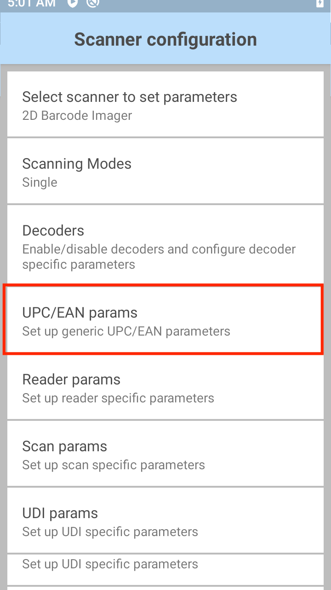
Convert DataBar to UPC EAN - If enabled, converts DataBar barcodes to UPC/EAN/JAN format. For this setting to work UPC/EAN/JAN symbologies must be enabled. This parameter only applies to GS1 DataBar Omnidirectional and GS1 DataBar Limited barcodes not decoded as part of a Composite barcode. It strips the leading '010' from DataBar-14 and DataBar Limited barcodes encoding a single zero as the first digit, and it reports the barcode as EAN-13. For barcodes that begin between two and five zeros, it strips the leading '0100' and reports the barcode as UPC-A. The UPC-A Preamble option that transmits the system character and country code applies to converted barcodes. Note that neither the system character nor the check digit can be stripped.
UPC Reduced Quiet Zone - Enable/Disable decoding UPC barcodes with reduced quiet zones, the area in front of and at the end of a barcode. Enabling this option increases the aggressiveness in decoding barcodes, resulting to increased decoding time and risk of misdecodes.
Bookland - When enabled, select a Bookland Format from the list below.
Bookland Format - When Bookland is enabled, it allows the the following selections for Bookland data:
Format ISBN-10 - The scanner reports Bookland data starting with 978 in traditional 10-digit format with the special Bookland check digit for backward-compatibility. Data starting with 979 is not considered Bookland in this mode.
Format ISBN-13 - The scanner reports Bookland data (starting with either 978 or 979) as EAN-13 in 13-digit format to meet the 2007 ISBN-13 protocol.
Coupon - Enable/Disable Coupon code decoding. UPC-A, EAN-13, and GS1-128 must be enabled to use this feature. When enabled, UPC-A barcodes starting with digit ‘5’, EAN-13 barcodes starting with digit ‘99’, and UPC-A/GS1-128 coupon codes are decoded.
Coupon Report Mode - Traditional coupon symbols are composed of two barcodes: UPC/EAN/JAN and Code 128. A new coupon symbol is composed of a single Data Expanded barcode. The new format offers more options for purchase values (up to $999.999) and supports complex discount offers as a second purchase requirement. An interim coupon symbol also exists that contain both types of barcodes: UPC/EAN/JAN and Databar Expanded. This format accommodates both retailers that do not recognize or use the additional information included in the new coupon symbol, as well as those who can process new coupon symbols.
- Old Coupon Report Mode - Reports both UPC-A/Code-128 and EAN-13/Code-128.
- New Coupon Report Mode - Scanning an interim format reports UPC-A/GS1-DataBar and EAN-13/GS1-DataBar.
- Both Coupon Report Modes - Reports both Old Coupon Format and New Coupon Format.
EAN Zero Extend - If enabled, adds five leading zeros to decoded EAN-8 barcodes to make them compatible in length to EAN-13 barcodes.
Linear Decode - Enables the linear decode property.
Retry Count - Retry count for auto-discriminating UPC/EAN/JAN supplementals, adjusting the number of times to decode a barcode without supplementals before transmission. The value range is 2 to 20; default value is 10. Zebra recommends a value of 5 or above when decoding a mix of UPC/EAN/JAN barcodes with and without supplementals. Supplemental Mode must be set to one of the following: Supplementals Auto, Supplementals Smart, Supplementals 378-379, Supplementals 978-979, Supplementals 977 or Supplementals 414-419-434-439 (2 to 20).
Security Level - The scanner offers four levels of decode security for UPC/EAN/JAN barcodes. As the quality of barcodes decreases, implementing an increased level of security will compensate and help improve decoding success. There is an inverse relationship between scanner aggressiveness and security. Zebra recommends choosing carefully the level of security necessary for any given application:
Level 0 - This setting allows the scanner to operate fastest, while providing sufficient security in decoding "in-spec" UPC/EAN/JAN barcodes.
Level 1 - As barcode quality levels diminish, certain characters become prone to decode failures before others (i.e., 1, 2, 7, 8). If the scanner is decode failures poorly printed barcodes, and the decode failures are limited to these characters, select this security level.
Level 2 - If the scanner fails to decode poorly printed barcodes, and the decode failures are not limited to characters 1, 2, 7, and 8, select this security level.
Level 3 - If the scanner is still fails to decode, select this security level. Be advised, selecting this option is an extreme measure against decode failures for severely out-of-spec barcodes. Selecting this level of security can significantly impair the decoding ability of the scanner. If this level of security is required, try to improve the quality of the barcodes.
Supplemental2 - Enable/disable length 2 supplementals.
Supplemental5 - Enable/disable length 5 supplementals.
Supplemental Mode - Select one of the following:
No Supplementals - The scanner decodes only UPC/EAN/JAN and ignores supplemental characters.
Supplemental Always - The scanner decodes only UPC/EAN/JAN symbols with supplemental characters, and ignores barcodes without supplementals.
Supplemental Auto - The scanner decodes UPC/EAN/JAN symbols with supplemental characters immediately. If the symbol does not have a supplemental, the scanner must decode the barcode the number of times set via UPC/EAN/JAN Supplemental Redundancy before transmitting its data to confirm that there is no supplemental.
Supplemental Smart - Enables smart supplementals. In this mode, the decoder returns the decoded value of the main block immediately unless it belongs to one of the following supplemental types:
◦ 378
◦ 379
◦ 977
◦ 978
◦ 979
◦ 414
◦ 419
◦ 434
◦ 439If the barcode is preceded by one of the prefixes above, the image is searched more aggressively for a supplemental and attempts to scan it. If the supplemental scanning fails, only the main barcode is returned.
Supplemental 378-379 - Enables (auto-discriminate) supplemental for UPC/EAN/JAN codes starting with 378 or 379. Disables reading of supplementals for any other UPC/EAN/JAN barcode not starting with 378 or 379. Tries to scan the supplemental if present. If the supplemental scanning fails, only the main barcode is returned.
Supplemental 978-979 - Enables (auto-discriminate) supplemental for UPC/EAN/JAN codes starting with 978 or 979. Disables reading of supplementals for another UPC/EAN/JAN barcode not starting with 978 or 979. Tries to scan the supplemental if present. If the supplemental scanning fails, only then the main barcode is returned.
Supplemental 414-419-434-439 - Enables (auto-discriminate) supplemental for UPC/EAN/JAN codes starting with 414, 419, 434 or 439. Disables reading of supplementals for another UPC/EAN/JAN barcode not starting with 414, 419, 434 or 439. Tries to scan the supplemental if present. If the supplemental scanning fails, only the main barcode is returned.
Supplemental 977 - Enables (auto-discriminate) supplemental for UPC/EAN/JAN codes starting with 977. Disables reading of supplementals for another UPC/EAN/JAN barcode not starting with 977. Tries to scan the supplemental if present. If the supplemental scanning fails, only the main barcode is returned.
Reader Params
Reader Parameters control specific configuration options for the barcode reader selected in the Profile being edited. Not all parameters will apply to all readers.

Presentation mode parameters - Sets the sensitivity level in reaction to movement within the scanner field of view during the scanning session to automatically activate the scanner when movement is detected. Used when Presentation Mode is selected for Aim Type.
- Sensitivity - Sets the sensitivity level.
- High - Scanning is activated with high sensivity to movement in the scanner field of view (default). Any slight movement in the field of view can activate the scanner.
- Medium - Scanning is activated with medium sensivity to movement in the scanner field of view.
- Low - Scanning is activated with low sensivity to movement in the scanner field of view. Fast movement in the field of view does not activate the scanner.
1D Quiet Zone Level - Sets the effort at which the decoder will attempt to decode "marginless" barcodes. Behavior of these levels will vary based on the marginless decoder selected. See the Reduced Quiet Zone table for behaviors:
Level 0 - The decoder will perform margin decoding as usual.
Level 1 - The decoder will perform more aggressively.
Level 2 - The decoder requires only one side end of barcode.
Level 3 - The decoder can decode anything.
Note: Higher marginless levels will increase decoding times and the risk of decoding errors. Zebra recommends enabling only the symbologies that require a higher marginless level and leaving all other symbologies at the default level of 1.
Aim Mode - Turns aim pattern on and off.
Aim Timer - Sets the duration (in ms) for timed aim modes. Supports a range from 0 - 60,000 ms in increments of 100 ms.
Aim Type - Permits selection of reader behavior when the trigger is pressed:
Trigger - For each trigger press, a single barcode can be scanned.
Timed Hold – Once trigger is pressed, an aiming session is started for a time specified by Aim Timer. When this time expires, a decode session is started and scan beam will be visible. The decode session will remain active until the Beam Timer expires, the trigger is released or a barcode is decoded.
Timed Release - Once the trigger is pressed, an aiming session is started and will continue until the trigger is released. If the Aim Timer is expired when the trigger is released, a decode session will be started with scan beam visible for a remaining time equal to Beam Timer or a barcode is decoded.
Press and Release - The scan beam starts when the trigger is pressed and released. The decode session will remain active until the Beam Timer expires or a barcode is decoded.
Presentation - Automatically activates the scanner and starts scanning immediately when a barcode is presented in its field of view, without any trigger press.
Continuous Read - A press and hold of the scan trigger continuously scans barcodes. Scanning stops upon releasing the trigger or when the scanner beam times out. The same barcode can be scanned multiple times. If scanning with the use of intents, for example with the soft scan trigger, START_SCANNING intent starts continuous scanning until STOP_SCANNING intent is received or until the scanner beam times out. Not supported with the Zebra RS507 Bluetooth Ring Scanner.
Press and Sustain - Starts the scan beam when the trigger is pressed and continues the decode session until the Beam Timer is expired, barcode is decoded or read is canceled. Scan beam is not stopped when the trigger is released. This avoids unexpected cancellations of a read by subsequently pressing the trigger button of the device; subsequent trigger presses while the beam is ON have no effect. Applies to internal imager on TC20/TC25 and RS6000/RS507 Bluetooth scanners connected to TC57/TC77 and PS20 devices.
Press and Continue - The scan beam starts when the trigger is pressed. A subsequent trigger hold or release keeps the decode session active until the beam timer expires or the next trigger press and release. This avoids early wear of the trigger button and minimizes the user effort to press and hold the hard trigger button during a decode session.
DPM Illumination Control - Controls illumination for DPM barcodes:
- Direct Illumination - Scanner uses only direct (white) illumination. Recommended for use with dot peen barcodes - tilt the part 30 degrees for optimal decoding.
- Indirect Illumination - Scanner uses only red illumination. Recommended for use with laser etched barcodes on cylinders or curved, rough, grainy, highly reflective, or visibly machined surfaces.
- Cycle Illumination - Scanner cycles alternately between direct and indirect illumination. The scanner starts with the illumination used during the last successful decode.
DPM Mode - Mode to optimize DPM barcode decoding performance based on barcode size (Default value is Mode 2):
- Disabled - No special processing.
- DPM Mode 1 - Optimizes decoding performance for smaller DPM barcodes, typically found on electronics and medical instruments, especially on smooth surfaces. These barcodes tend to be laser etched or direct printed.
- DPM Mode 2 - Optimizes decoding performance for larger DPM barcodes, typically found on industrial parts, especially on rough, grainy or visibly machined surface. These barcodes tend to be dot peen or laser etched.
Illumination Brightness - Adjusts the brightness for the scanning session. Integer values: 0 - 10.
- Low (0) - Low intensity illumination during scanning session.
- High (10) - Maximum intensity illumination during scanning session (default).
Illumination mode - Turns illumination on and off.
Inverse 1D Mode - Permits option selection for inverse 1D barcode decoding:
Disabled - Disables decoding of inverse 1D symbologies.
Enabled - Enables decoding of inverse 1D symbologies only.
Auto - Automatically detects and decodes positive and inverse 1D symbologies.
LCD Mode - Used to Enable/Disable LCD Mode, which enhances the ability of the imager to read barcodes from LCD displays such as cellphones (applies to Scan Module only). Use of LCD mode might lead to performance degradation and a blinking reticle prior to decoding.
Linear Security Level - Sets the number of times a barcode is read to confirm an accurate decode:
Security Redundancy and Length - Two times read redundancy based on redundancy flags and code length.
Security Short or Codabar - Two times read redundancy if short barcode or Codabar.
Security All Twice - Two times read redundancy for all barcodes.
Security Long and Short - Two times read redundancy for long barcodes, three times for short barcodes.
Security All Thrice - Three times read redundancy for all barcodes.
HW Engine Low Power Timeout - Time (in ms) of inactivity before scanner enters low-power mode.
Picklist - Permits selection of Picklist mode, which instructs the imager to decode only the barcode directly under the cross-hair/reticle in the viewfinder. This feature is most useful for applications in which multiple barcodes may appear in the field of view during a decode session but only one is desired for decoding.
Disable - Disables Picklist mode; any barcode within the field of view can be decoded.
Hardware Picklist - Picklist mode is enabled by sending a command to hardware. 8y6
Software Picklist - Picklist feature is handled in the software; no commands are sent to hardware.
Notes:
- Performance might vary on some devices if Hardware or Software Picklist modes are set.
- If using MultiBarcode mode, see important behavior notes below.
Poor Quality Decode Effort - Permits selection of enhancement modes for decoding barcodes of poor or degraded quality. Available options:
Effort Level 0 - Decoding performance on regular 1D and 2D barcodes is not affected.
Effort Level 1 - The scanner performance on regular 2D barcodes is impacted while decoding performance on Tesco Thailand barcode and Suppository barcode is improved.
Effort Level 2 - same as Level 1.
Effort Level 3 - same as Level 1.
Note: Same performance from Effort Level 1 to Effort Level 3.
Beam Timer - Sets the maximum amount of time (in ms) that the reader remains on. Supports a range from 0 - 60,000 ms in increments of 100 ms. A value of 0 sets the reader to stay on indefinitely.
Different Symbol Timeout - Used to prevent the scanner from decoding another symbol within a specified time interval (applicable only when Aim Type is set to Continuous Read). A value of 0 indicates that no interval is required between two successive reads.
Same Symbol Timeout - Used to prevent the scanner from decoding the same symbol within a specified time interval (applicable only when Aim Type is set to Continuous Read). A value of 0 indicates that no interval is required between two successive reads.
Trigger Wakeup and Scan - Used to trigger scanning when a device is in a suspended/screen-off state. User needs to set the scanner trigger button as a wakeup source. When a user presses the trigger button in a suspend/screen-off state, scanning starts when the user keeps the trigger pressed.
Digimarc Decoding - Used to enable/disable support for Digimarc, which encodes and invisibly integrates traditional barcode data onto product packaging. Supported with internal imager and rear camera. Enabled by default. More about Digimarc.
Viewfinder Mode - Permits selection of supported Viewfinder modes:
Viewfinder Enabled - Enables only the viewfinder.
Static Reticle - Enables the viewfinder and a red reticle (cross-hairs) in the center of the screen to aid in positioning the barcode for scanning. This parameter is supported only when the Camera is used for scanning.
Zoom - Required for decoding DotCode barcodes. User needs to set Camera Zoom value to 2 on the following devices: MC33, TC51/TC56, TC70x/TC75x, VC80x, TC52/TC57, TC72/TC77, PS20. If Camera Zoom is set to any value other than 2 on these devices, it can negatively impact the decoding of specific DotCode barcodes. Parameter values: 1 - 8. Default=1.
Keep Pairing Info After Reboot - Enable/disable automatic re-connection to the connected Bluetooth scanner after device reboot. Applies only to connected Bluetooth scanners.
See Important notes below.
Character Set Configuration
Provides options to make adjustments with the decoder character set. These options are:
- Character Set Selection
- Auto Character Set Preferred Order
- Auto Character Set Failure Option
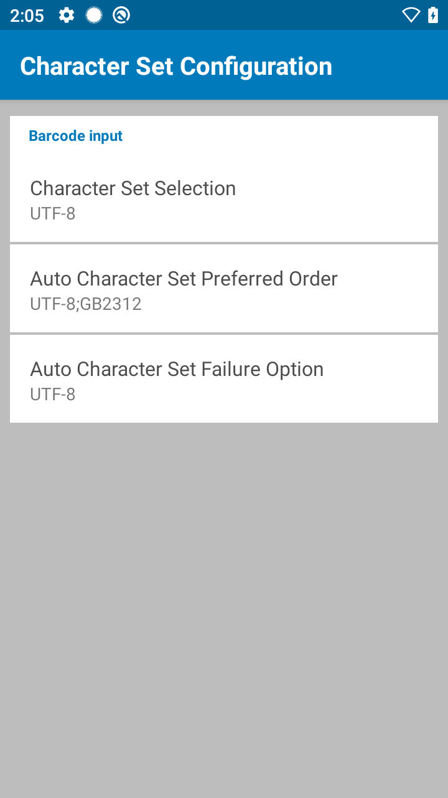
Character Set Selection - Converts the barcode data to the specified encoding type if different from the default encoding type, UTF-8. Other options are: Auto Character Set Selection, ISO-8859-1, Shift_JIS and GB18030.
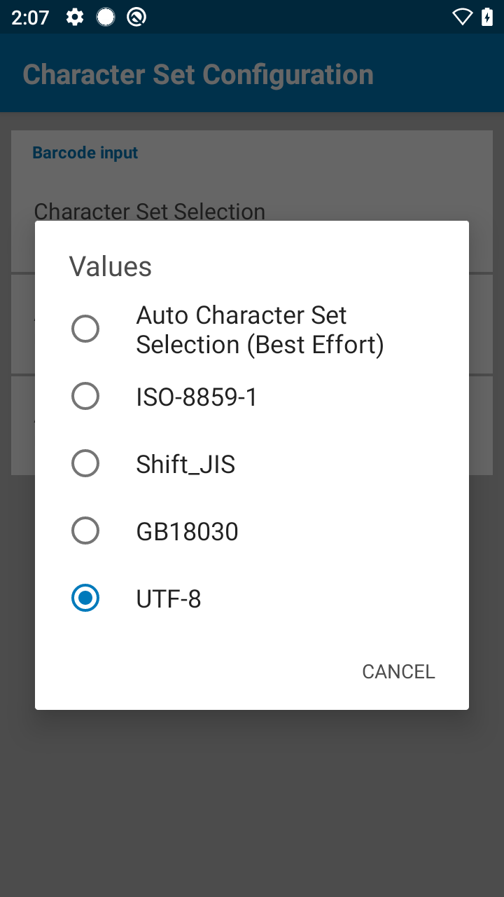
- Auto Character Set Selection (Best Effort) - Decodes data in the preference order of character sets specified in the "Auto Character Set Preferred Order" list. If the data cannot be decoded based on the character sets listed, "Auto Character Set Failure Option" takes into effect. See description for each respective option for more details.
Auto Character Set Preferred Order - If "Auto Character Set Selection (Best Effort)" is selected, data is decoded in the specified preference order of the supported character sets listed: UTF-8 and GB2312. This is useful in cases where data can be decoded from more than one character set. The first character set listed which can decode the data successfully is chosen to decode the data - any other character set located lower in the list is not considered, even if the data could be successfully decoded using that character set. If DataWedge cannot find a character set from the preferred list to decode the data successfully, the character set selected in "Auto Character Set Failure Option" is used to decode the data.
Both the preferred character set list and its preference order is configurable. The order is rearranged by dragging the “hamburger-like” icon of the character set into the desired position. To delete a character set, long press on the item and the “Delete” option appears. To add a new character set, tap the “hamburger” menu at the top right corner - an option to add a character set, such as UTF-8 and GB2312, appears.
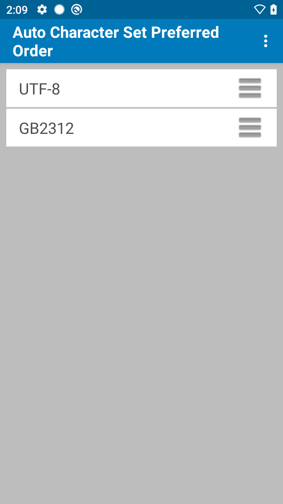
Auto Character Set Failure Option - Used to decode data if the device cannot successfully decode based on the character sets listed in the "Auto Character Set Preferred Order" list. If “None” is selected, “Null” is returned as the data string.

Scan Params
Scan Parameters allow for configuration of Code ID and scanner-specific decoding feedback options for the scanner selected in the Profile being edited.
Note: Some parameters are device-dependent.

Code ID Type - Permits the selection of a Code ID character to insert between the prefix and the decoded symbol. The Code ID character identifies the code type of a scanned barcode. This information can be useful to an application when multiple barcode types are being read. Available options:
Code ID Type None - Insert no prefix.
Code ID Type Aim - Inserts a standards-based three-character prefix.
Code ID Type Symbol - Inserts a Zebra-defined single-character prefix.
Connection Idle Time - Specifies the length of time (in seconds) for a peripheral Bluetooth scanner to remain connected until transitioning to standby mode to conserve battery power.
Decode Haptic Feedback - Enable the mobile computer to vibrate to indicate a successful decode.
Decode Audio Feedback - Select an audio tone to play to indicate a successful decode.
Decode Screen Notification - When enabled, a translucent green screen overlay appears for 1 second upon every successful decode.
Decode Screen Notification Timer - Defines the length of time (in milliseconds) to display the screen notification upon successful decode. Timer configuration range is 500 ms to 1500 ms. Default time is 1000 ms.
Decode Screen Translucency Level - Sets the translucency of the decode notification green screen. Translucency level range is 20 to 50, in increments of 5. The higher the value, the more the translucency (visibility).
Decoding LED Notification - When enabled, causes the Red LED to flash when the scan trigger is pressed.
Decode Feedback LED Timer - Defines the length of time (in ms) to flash the Green LED to indicate a successful decode.
Beep Volume Channel - Permits selection of the volume setting to be used when playing the Decode Audio Feedback. Available options:
Ringer - Uses Ringer volume setting for audio feedback.
Music and Media - Uses Music and Media volume setting for audio feedback.
Alarms - Uses the Alarms volume setting for audio feedback.
Notification - Uses Notification volume setting for audio feedback.
Note: Not all ringtones are supported as decode tones; some ringtones might be truncated when used as a decode tone. Zebra recommends testing all selected tones before deployment.
Important: Support for decode parameters can vary depending on the scanning device selected. For device-specific support notes, please refer to the Integrator Guide that accompanied the unit.
UDI Params
The Universal Device Identifier (UDI) parameter acquires multiple barcodes simultaneously.
Support for UDI barcodes has been restored to Zebra devices running Android 10 with BSP 10.12.13 "Update 17" (or later).
Tap Scanning Modes within Scanner Configuration to enable UDI decoding:
When UDI scanning mode is enabled (as above)... 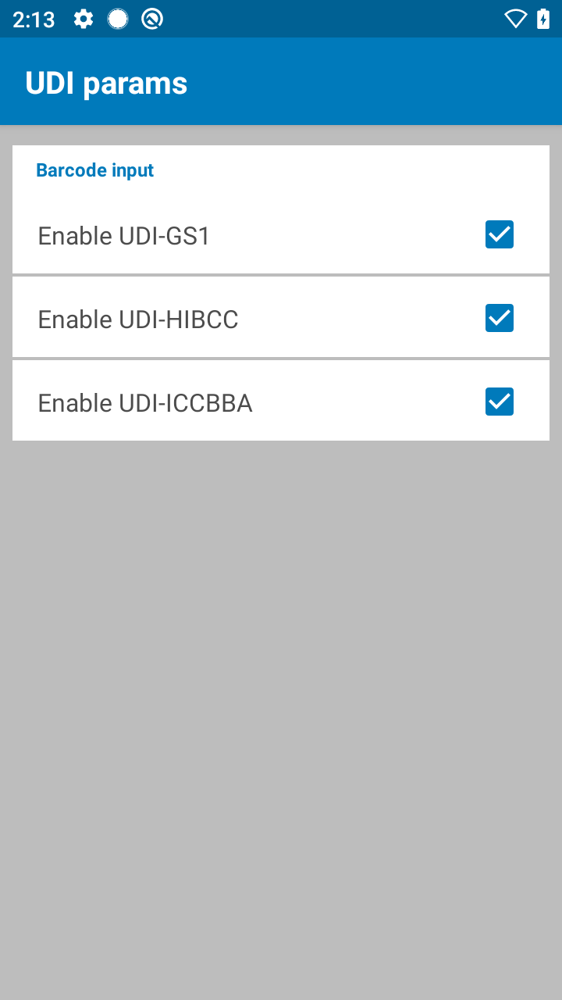 ...the selected UDI input parameter(s) will be used.
UDI Decoding Notes:
- UDI decoding is supported only on the devices listed above.
- Output of collected UDI data might require settings adjustments of the token-separation character and/or output order. See the Keystroke Output guide guide for more information.
- UDI settings can vary by geographic region. See the relevant sections of Keystroke Output, Intent Output and/or IP Output guides for more information.
- Blood bags with barcodes that follow the ICCBBA standard can be decoded with UDI.
OCR Params
Optical character recognition (OCR) decoding is not as secure as barcode. To decrease OCR misdecodes and speed OCR reading, set an accurate OCR template and character subset, and use a check digit. Enabling OCR can slow barcode decoding. Enabling more than one OCR font could also slow OCR decoding and impact OCR decoding accuracy.
OCR is supported on all Zebra SDM660 platform devices with built-in imagers (such as TC52, TC57, TC72, and TC77). OCR is not supported on camera-only devices, Bluetooth scanners, SE965-based devices, nor Zebra Scanner Expansion Back (ZBack).
Inverse OCR - White or light words on a black or dark background. Select an option for decoding inverse OCR:
- Regular Only - Decode regular OCR (black on white) strings only.
- Inverse Only - Decode inverse OCR (white on black) strings only.
- Auto-discriminate - Decode both regular and inverse OCR strings.
OCR Check Digit Modulus - Sets the OCR module check digit calculation. The check digit is the last digit (in the right most position) in an OCR string and improves the accuracy of the collected data. The check digit is the end product of a calculation made on the incoming data. For check digit calculation, for example Modulus 10, alpha and numeric characters are assigned numeric weights. The calculation is applied to the character weights and the resulting check digit is added to the end of the data. If the incoming data does not match the check digit, the data is considered corrupt. The selected check digit option does not take effect until you set OCR Check Digit Validation.
OCR Check Digit Multiplier - Sets OCR check digit multipliers for the character positions. For check digit validation, each character in scanned data has an equivalent weight used in the check digit calculation.
OCR Check Digit Validation - Protects against scanning errors by applying a check digit validation scheme. Options:
- None - 0 (default)
- Product Add Left to Right - Each character in the scanned data is assigned a numeric value. Each digit representing a character in the scanned data is multiplied by its corresponding digit in the multiplier, and the sum of these products is computed. The check digit passes if this sum modulo Check Digit Modulus is zero.
Example: Scanned data numeric value is 132456 (check digit is 6). Check digit multiplier string is 123456
Digit 1 3 2 4 5 6
Multiplier 1 2 3 4 5 6
Product 1 6 6 16 25 36
Product add 1+ 6+ 6+ 16+ 25+ 36 = 90
If the Check Digit Modulus is 10, it passes because 90 is divisible by 10 (the remainder is zero). - Product Add Right to Left - Each character in the scanned data is assigned a numeric value.
The check digit multiplier is reversed in order. Each value representing a character in the scanned data is multiplied by its corresponding digit in the reversed multiplier, resulting in a product for each character in the scanned data. The sum of these products is computed. The check digit passes if this sum modulo Check Digit Modulus is zero.
Example: Scanned data numeric value is 132459 (check digit is 9). Check digit multiplier string is 123456.
Digit 1 3 2 4 5 9
Multiplier 6 5 4 3 2 1
Product 6 15 8 12 10 9
Product add 6+ 15+ 8+ 12+ 10+ 9 = 60
If the Check Digit Modulus is 10, it passes because 60 is divisible by 10 (the remainder is 0). - Digit Add Left to Right - Each character in the scanned data is assigned a numeric value.
Each value representing a character in the scanned data is multiplied by its corresponding digit in the multiplier, resulting in a product for each character in the scanned data. The sum of each individual digit in all of the products is then calculated. The check digit passes if this sum modulo Check Digit Modulus is zero.
Example: Scanned data numeric value is 132456 (check digit is 6). Check digit multiplier string is 123456.
Digit 1 3 2 4 5 6
Multiplier 1 2 3 4 5 6
Product 1 6 6 16 25 36
Digit add 1+ 6+ 6+ 1+6+ 2+5+ 3+6 = 36
If the Check Digit Modulus is 12, it passes because 36 is divisible by 12 (the remainder is 0). - Digit Add Right to Left - Each character in the scanned data is assigned a numeric value.
The check digit multiplier is reversed in order. Each value representing a character in the scanned data is multiplied by its corresponding digit in the reversed multiplier, resulting in a product for each character in the scanned data. The sum of each individual digit in all of the products is then calculated. The check digit passes if this sum modulo Check Digit Modulus is zero.
Example: Scanned data numeric value is 132456 (check digit is 6). Check digit multiplier string is 123456.
Digit 1 3 2 4 5 6
Multiplier 6 5 4 3 2 1
Product 6 15 8 12 10 6
Digit add 6+ 1+5+ 8+ 1+2+ 1+0+ 6 = 30
The Check Digit Modulus is 10. It passes because 30 is divisible by 10 (the remainder is 0). - Product Add Right to Left Simple Remainder - Each character in the scanned data is assigned a numeric value. The check digit multiplier is reversed in order. Each value representing a character in the scanned data is multiplied by its corresponding digit in the reversed multiplier, resulting in a product for each character in the scanned data. The sum of these products except for the check digit's product is computed. The check digit passes if this sum modulo Check Digit Modulus is equal to the check digit's product.
Example: Scanned data numeric value is 122456 (check digit is 6). Check digit multiplier string is 123456.
Digit 1 2 2 4 5 6
Multiplier 6 5 4 3 2 1
Product 6 10 8 12 10 6
Product add 6+ 10+ 8+ 12+ 10 = 46 6
The Check Digit Modulus is 10. It passes because 46 divided by 10 leaves a remainder of 6. - Digit Add Right to Left Simple Remainder - Each character in the scanned data is assigned a numeric value. The check digit multiplier is reversed in order. Each value representing a character in the scanned data is multiplied by its corresponding digit in the reversed multiplier, resulting in a product for each character in the scanned data. The sum of each individual digit in all of the products except for the check digit's product is then calculated. The check digit passes if this sum modulo Check Digit Modulus is equal to the check digit's product.
Example: Scanned data numeric value is 122459 (check digit is 6). Check digit multiplier string is 123456.
Digit 1 2 2 4 5 9
Multiplier 6 5 4 3 2 1
Product 6 10 8 12 10 9
Digit add 6+ 1+0+ 8+ 1+2+ 1+0+ = 19 9
The Check Digit Modulus is 10. It passes because 19 divided by 10 leaves a remainder of 9. - Health Industry - HIBCC43 - The health industry module 43 check digit standard. The check digit is the modulus 43 sum of all the character values in a given message, and is printed as the last character in a given message.
OCR Lines - Select the number of OCR lines to decode:
- 1 Line
- 2 Line
- 3 Line
OCR Maximum Characters - Select the maximum number of OCR characters (including spaces) per line to decode.
OCR Minimum Characters - Select the minimum number of OCR characters (not including spaces) per line to decode.
OCR Orientation - Select the orientation of an OCR string to be read. Setting an incorrect orientation can cause mis-decodes. Options:
- 0 degree - to the imaging engine (default)
- 270 degree - clockwise (or 90o counterclockwise) to the imaging engine
- 180 degree - (upside down) to the imaging engine
- 90 degree - clockwise to the imaging engine
- Omnidirectional
OCR Quiet Zone - Sets the field width of blank space to stop scanning during OCR reading.
OCR Subset - Defines a custom group of characters in place of a preset font variant. For example, if scanning only numbers and the letters A, B, and C, create a subset of just these characters to speed decoding. This applies a designated OCR Subset across all enabled OCR fonts.
OCR Template - Creates a template for precisely matching scanned OCR characters to a desired input format, which helps eliminate scanning errors. The template expression is formed by numbers and letters. The default is 99999999 which accepts any alphanumeric character OCR string. If there are less than 8 '9' characters, the '9' represents only digit values. Carefully constructing an OCR template eliminates scanning errors.
Minimum length - 3
Maximum Length - 100 (Default - 99999999)
OCR Templates and Options:
| Name | Description | Template | Valid Data/ Incoming Data |
Invalid Data/ Outgoing Data |
|---|---|---|---|---|
| Required Digit (9) | Only a numeric character is allowed in this position. | 99999 | 12987 | 123AB |
| Required Alpha (A) | Only an alpha character is allowed in this position. | AAA | ABC | 12F |
| Require and Suppress (0) | Any character in this position, including space or reject, is suppressed from the output. | 990AA | 12QAB | 12AB |
| Optional Alphanumeric (1) | This option accepts an alphanumeric character if present. Optional characters are not allowed as the first character(s) in a field of like characters. | 99991 | 1234A | 1234< |
| Optional Alpha (2) | This option accepts an alpha character if present. Optional characters are not allowed as the first character(s) in a field of like characters. | AAAA2 | ABCDE | ABCD6 |
| Alpha or Digit (3) | An alphanumeric character is required in this position to validate the incoming data. | 33333 | 12ABC | 12AB< |
| Any Including Space & Reject (4) | Accepts any character in this position, including space and reject. Rejects are represented as an underscore (_) in the output. This is a good selection for troubleshooting. | 99499 | 12$34 34_98 |
|
| Any except Space & Reject (5) | Accepts any character in this position except a space or reject. | 55999 | A.123 *Z456 |
A BCD |
| Optional Digit (7) | Accepts a numeric character if present. Optional characters are not allowed as the first character(s) in a field of like characters. | 99977 | 12345 789 |
789AB |
| Digit or Fill (8) | Accepts any numeric or fill character in this position. | 88899 | 12345 >>789 <<789 |
|
| Alpha or Fill (F) | Accepts any alpha or fill character in this position. | AAAFF | ABCXY LMN>> ABC<5 |
|
| Optional Space ( ) | Accepts a space if present. Optional characters are not allowed as the first characte(s) in a field of like characters. | 99 99 | 12 34 1234 |
67891 |
| Optional Small Special (.) | Accepts a special character if present. Optional characters are not allowed as the first character(s) in a field of like characters. Small special characters are - , and . | AA.99 | MN.35 XY98 |
XYZ12 |
| Other Template Operators - These template operators assist in capturing, delimiting, and formatting scanned OCR data | ||||
| Literal String (" and +) | Use either of these delimiting characters surrounding alphanumeric characters to define a literal string within a template that must be present in scanned OCR data. There are two characters used to delimit required literal strings; if one of the delimiter characters is present in the desired literal string, use the other delimiter. | "35+BC" | 35+BC | AB+22 |
| New Line (E) | To create a template of multiple lines, add E between the template of each single line. | 999EAAAA | 321 BCAD |
XYZW 12 |
| String Extract (C) | This operator combined with others defines a string of characters to extract from the scanned data. The string extract is structured as follows: CbPe Where: • C is the string extract operator • b is the string begin delimiter • P is the category (one or more numeric or alpha characters) describing the string representation • e is the string end delimiter Values for b and e can be any scannable character. They are included in the output stream. |
C>A> | XQ3>ABCDE> ->ATRU>123 |
>ABCDE> >ATRU> |
| Ignore to End of Field (D) | This operator causes all characters after a template to be ignored. Use this as the last character in a template expression. | 999D | 123-PED 357298 |
123 357 |
| Skip Until (P1) | This operator allows skipping over characters until a specific character type or a literal string is detected. It can be used in two ways: P1ct Where: • P1 is the Skip Until operator • c is the type of character that triggers the start of output • t is one or more template characters P1"s"t Where: • P1 is the Skip Until operator • "s" is one or more literal string characters that trigger the start of output • t is one or more template characters The trigger character or literal string is included in output from a Skip Until operator, and the first character in the template should accommodate this trigger. |
P1"PN"AA9999 | 123PN9876 X-PN3592 |
PN9876 PN3592 |
| Skip Until Not (P0) | This operator allows skipping over characters until a specific character type or a literal string is not matched in the output stream. It can be used in two ways: P0ct Where: • P0 is the Skip Until Not operator • c is the type of character that triggers the start of output • t is one or more template characters P0"s"t Where: • P0 is the Skip Until Not operator • "s" is one or more literal string characters that trigger the start of output • t is one or more template characters The trigger character or literal string is included in output from a Skip Until Not operator. |
P0A9999 | BPN3456 X-PN3592 |
5341 No output |
| Repeat Previous (R) | This operator allows a template character to repeat one or more times, allowing the capture of variable-length scanned data. The following examples capture two required alpha characters followed by one or more required digits: | AA9R | AB3 AB3 32RM52700 |
PN12345 PN12345 No output |
| Scroll Until Match (S) | This operator steps through scanned data one character at a time until the data matches the template. | S99999 | AB3 PN12345 32RM52700 |
No output 12345 52700 |
| Multiple Templates | This feature sets up multiple templates for OCR decoding. For each template in the multiple template string, use a capital letter X as a separator between the templates. For example, set the OCR Template as 99999XAAAAA to decode OCR strings of either 12345 or ABCDE. |
Following are sample templates with descriptions of valid data for each definition. The Field Definition is followed by its description: "M"99977 : M followed by three digits and two optional digits. "X"997777"X" : X followed by two digits, four optional digits, and an X. 9959775599 : Two digits followed by any character, a digit, two optional digits, any two characters, and two digits. A55"-"999"-"99 : A letter followed by two characters, a dash, three digits, a dash, and two digits. 33A"."99 : Two alphanumeric characters followed by a letter, a period, and two digits. 999992991 : Five digits followed by an optional alpha, two digits, and an optional alphanumeric. "PN98" : Literal field - PN98 |
||
Related guides: